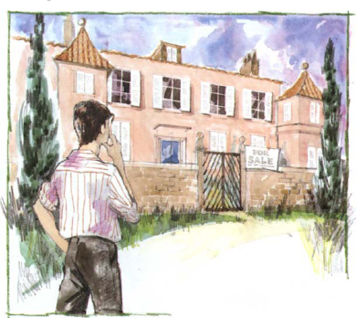
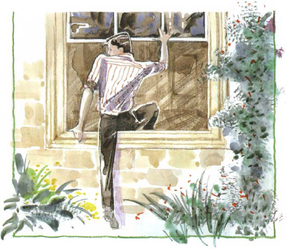
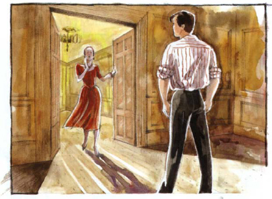
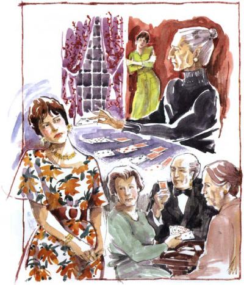
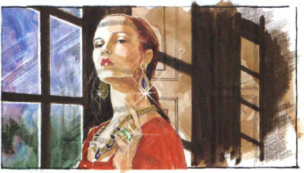
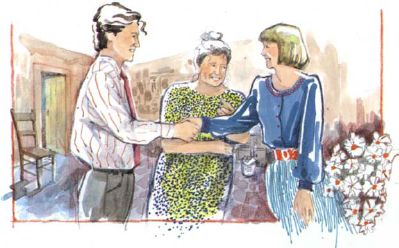

Paul muốn gặp Maria. Anh muốn nói chuyện với cô.
Anh sẽ đến ngôi nhà trên đồi, anh nghĩ. Có lẽ Maria sẽ ở đó.
Nhưng ngôi nhà trên đồi trông có vẻ trống không. Không có rèm cửa sổ. Có một thông báo lớn trên cổng. Ghi "Đang bán".
Paul nhìn qua cổng. Không có ai trong vườn. Mọi thứ đều yên tĩnh.
Tôi sẽ vào nhà và xem xung quanh, anh nghĩ. Có lẽ tôi sẽ tìm được địa chỉ của Maria. Sau đó, tôi có thể viết thư cho cô ấy.

Paul đẩy cổng mở, và bước lên các bậc thang tới ngôi nhà. Rất yên tĩnh. Anh đẩy cửa trước. Cửa đóng. Anh đi vòng quanh nhà. Có một cửa sổ mở.
Paul nhanh chóng trèo qua cửa sổ mở. Anh rất phấn khích và tim đập nhanh. Anh đang ở trong ngôi nhà cũ của Maria! Anh nhớ tới mẹ cô ấy. Anh nhớ cái buổi chiều khủng khiếp đó. Nhưng ngôi nhà bây giờ đã khác. Không có đồ đạc trong phòng. Không có thảm và tranh. Nhà trống không.
Paul cảm thấy hơi sợ.
Có ai trong nhà không nhỉ, anh nghĩ. Không, anh không nghe thấy gì.

Paul lặng lẽ đi đến cửa phòng và mở ra. Không có ai ở đó. Anh đi từ phòng này sang phòng khác. Tất cả các phòng đều lớn, và đều trống không.
Cuối cùng anh đến một phòng rất lớn. Anh dừng lại. Anh biết căn phòng này. Anh đã gặp mẹ Maria ở đây! Anh nhớ mọi thứ, bà già, khuôn mặt khắc khổ, những chiếc nhẫn to trên tay... Và giờ bà già đã chết.
Bỗng nhiên, Paul nghe thấy tiếng động. Ai đó trong phòng! Cửa mở. Ai đó đứng ở cửa ra vào. Đó là một người phụ nữ.

‘Maria!’ Paul nói.
‘Paul!’ Maria nói. ‘Anh làm gì ở đây?’
‘Anh đang tìm em’, Paul nói.
‘Anh đang tìm em ư?’ Maria hỏi. Cô ấy mỉm cười.
‘Maria’, Paul nói. ‘Tại sao em lại lấy anh ta?’
‘Mẹ đã già’, Maria nói. ‘Con không vui ở đây. Con chưa bao giờ đi dự tiệc, chưa bao giờ ra ngoài. Con muốn tiền. Con muốn tận hưởng và có bạn bè.
‘Anh hiểu’, Paul nói. ‘Em không sợ mẹ nữa. Em chán bà ấy. Bà ấy già rồi, và em muốn một cuộc sống mới. Nhưng tại sao em lại bỏ chồng?

‘Chồng em ư?’ Maria nói. Người đàn ông già béo đó ư! Anh ta ngu ngốc lắm, Paul ạ. Anh ta cho em tiền. Anh ta cho em đồ trang sức, xe... mọi thứ. Nhưng anh ta không thích bạn bè em. Anh ta thích người già. Em thích người trẻ thông minh, Paul ạ. Em thích anh. Anh hiểu chứ?
‘Vâng’, Paul chậm rãi nói. ‘Bây giờ anh hiểu rồi.
‘Em mừng lắm’, Maria nói. ‘Em rất buồn về anh, Paul. Em thích anh. Em thích những bài thơ ngộ nghĩnh của anh...'
‘Những bài thơ ngộ nghĩnh của anh...’ Paul nói. Anh dừng lại.
‘Anh yêu em, phải không, Paul?’ Maria nói. ‘Anh vẫn yêu em chứ?’
‘Em đã kết hôn’, Paul nói. ‘Em có chồng rồi.
‘Nhưng em không yêu anh ta’, Maria nhanh chóng nói. ‘Em muốn được tự do. Em muốn đi dự tiệc và tận hưởng cuộc sống. Hãy đến với em. Bây giờ em có tiền. Chúng ta sẽ hạnh phúc bên nhau.
‘Không’, Paul nói. ‘Không. Mọi thứ đã kết thúc.
Maria tức giận. Mắt cô nhỏ lại và lạnh lùng, và miệng cô mỏng và cứng lại. Tay cô đeo đầy nhẫn to. Maria trông giống mẹ cô.

‘Anh xin lỗi, Maria’, anh nói. ‘Anh không còn yêu em nữa. Anh đã yêu em rất nhiều, nhưng giờ mọi thứ đã khác. Tạm biệt em, Maria.
‘Nhưng anh không thể bỏ rơi em được’, Maria nói. ‘Em muốn anh.
‘Hãy quay lại với chồng em đi’, Paul nói.
Anh nhìn cô ấy lần cuối. Rồi anh quay người, và bước ra khỏi phòng. Paul rời khỏi ngôi nhà trên đồi, và đi bộ về nhà. Anh đã được tự do.
Mình đã quá ngu ngốc, anh nghĩ. Maria chưa bao giờ yêu mình. Mình thật ngu ngốc làm sao! Maria đẹp, nhưng cô ấy rất cứng rắn và lạnh lùng. Cô ấy giống mẹ mình. Mình yêu vẻ đẹp của Maria. Nhưng mình chưa bao giờ yêu Maria.
Đó là một buổi tối đáng yêu. Paul cảm thấy rất hạnh phúc. Cửa ngôi nhà nhỏ màu nâu mở ra. Mẹ anh đang ở nhà. Bà đang nói chuyện với một cô gái xinh đẹp.
‘Paul’, bà nói, ‘đây là em họ của con, Elsa.
‘Xin chào Elsa’, Paul nói. Anh mỉm cười.
